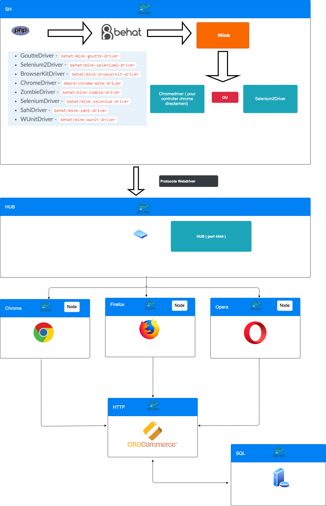

Concepts
Les informations ci-dessous résume les concepts et les outils qui sont importants pour la compréhension et l’utilisation du framework de test inclus dans OroBehatExtension.
Behavior-driven development (BDD) est un processus de développement logiciel issu du développement axé sur les tests (TDD). Le BDD combine les techniques générales et les principes de TDD avec des idées de conception axée sur le domaine et l'analyse d'objet et du design pour fournir aux équipes de développement et de gestion de logiciels des outils partagés et un processus partagé de collaboration pour le développement de logiciels.
-
Behat est un framework de développement basé sur le comportement pour PHP. Cet outil permet de décrire le comportement de l'application voulue en utilisant Php et Gherking Vous pouvez utiliser Behat pour décrire tout ce que vous pouvez décrire dans la logique métier. Outils, applications GUI, applications Web, etc.
-
Mink est une extension de Behat qui vas permettre de controller un navigateur durant les tests en utilisant PHP. Il vas utiliser des emulateurs de navigateurs , l'avantage d'utiliser Mink c'est qu'il supprime les différences entres les différents emulateurs de navigateur et leurs drivers.
-
WebDriver est un protocole qui permet de controller des navigateurs en JSON.
-
MinkSelenium2Driver vas faire le lien entre Mink vers Selenium en utilisant le protocole WebDriver, c'est un driver universel.
-
ChromeDriver est un driver comme Selenium2Driver mais ne fonctionne que pour chrome et a la particularité de fonctionner sans Selenium ce qui rend les tests plus rapides sur chrome.
-
Selenium est un framework de test informatique développé en Java qui est composé de 3 grandes briques :
- Selenium WebDriver : Framework de test fonctionnel permettant l’écriture de scripts de test automatisés en differents language.Il met a disposition une API pour controller tout les navigateurs.
- Selenium IDE : qui permet de créer des script , sous forme d'extension chrome our firefox, pour controller des navigateurs.
- Selenium Grid : Qui se compose d'un hub et de nodes, permet de lancer des test sur plusieurs navigateurs en même temps.
-
Symfony2Extension qui ajoute une intégration pour Symfony avec Behat.
-
OroTestFrameworkExtension est une extension de behat pour intégrer Oro, il ajoute des features tel que :
- l'autoloading des contextes, permet de construire des suites de tests spécifiques.
- la possibilité de déclarer des 'Elements' facilement dans le fichier de config behat.yml
- Mapper facilement des champs de formulaires
-
OroElementFactory est une classe qui permet de manipuler des éléments sur la page:
hasElement($name)createElement($name, NodeElement $context = null)guessElement($name)findElementContains($name, $text, Element $context = null)findElementContainsByCss($name, $text, Element $context = null)findElementContainsByXPath($name, $text, $useChildren = true, Element $context = null)findAllElements($name, NodeElement $context = null)getPage()findElement($name, $selectorCallback, Element $context = null)- et d'autre fonctions ....
-
Le contexte : Chaque phrase en Gherkin est associée à une méthode PHP grâce aux classes de contexte.La phrase est située dans une annotation au-dessus de la fonction à appeler. L’annotation peut contenir une expression rationnelle ou une phrase avec des placeholders commençant par deux points. Chaque parenthèse de capture de l’expression rationnelle ou placeholder sera un argument de la méthode PHP appelée pour exécuter la phrase du test.
Architecture :
